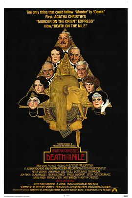

尼罗河上的惨案 / Death on the Nile
又名：尼罗河上谋杀案 / 尼罗河谋杀案
作品信息
| 导演 | 约翰·吉勒明 |
| 编剧 | 安东尼·沙弗尼 / 阿加莎·克里斯蒂 |
| 主演 | 彼得·乌斯蒂诺夫 / 简·伯金 / 洛伊丝·奇利斯 / 贝蒂·戴维斯 / 米娅·法罗 / 乔·芬奇 / 奥丽维娅·赫西 / I·S·乔哈尔 / 乔治·肯尼迪 / 安吉拉·兰斯伯瑞 / 西蒙·麦考金戴尔 / 大卫·尼文 / 玛吉·史密斯 / 杰克·沃登 / 哈里·安德鲁斯 |
| 类型 | 剧情 / 悬疑 / 犯罪 |
| 制片国家/地区 | 英国 |
| 语言 | 英语 / 法语 / 德语 |
| 上映日期 | 1979-07(中国大陆) / 1978-09-29(美国) |
| 片长 | 140分钟 |
| IMDb | tt0077413 |
说过什么
2021-04-02 10:41:43
广播 · 想看
最后一次看到是 2026-08-01T11:09:07+10:00 · 豆瓣原页